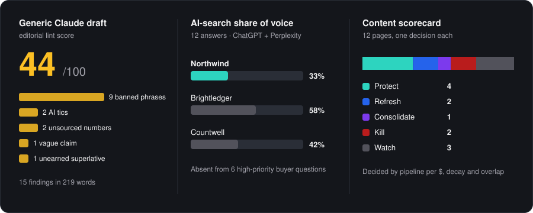

Head of Content Marketing · AI search · Los Angeles
Your favorite content marketer's favorite content marketer.
AI does the production.People make the calls.
This is the content operation I'd run for you. One expert interview becomes a week of content. Every page is judged on pipeline, not traffic. And you always know whether buyers find you in ChatGPT.
14 yearsleading content across tech, healthcare and regulated industries. Guest instructor at NYU Stern.
Content for teams at
RedditUberDoorDashRampMetaMaskBrightwheelZenefitsPodiumOwner.comIDEO U
871%ChatGPT visibility
1,400%AI Overview mentions
$220K+saved per year
$200M+ad spend supported
The problem
Every team has the same model. The system around it is the advantage.
Same company, same expert interview. One run with a blank prompt, one run through the engine.
The usual prompt
"Write a blog post about AP automation."
44 / 100
Contradicts the company's own expert
Repeats the myth the expert wants to kill
Invents two statistics
Could carry any competitor's logo
The same model, inside a system
Grounded, checked, approved
Every angle quotes the expert. No quote, no angle.
Drafts use only approved, sourced numbers
A linter blocks generic AI phrasing before an editor sees it
Briefs target the buyer questions where the brand is missing from AI answers
How it works
Agents do the hours. Three decisions stay locked to people.
The checkpoints live in the code, so nobody skips them under deadline pressure.
Expert interview→Angles→Editor picks the angle→Brief→Expert approves the numbers→Draft + review→Editor ships→LinkedIn, newsletter, video, sales
Human checkpoints
AI-search tracker
Scores how often the brand shows up in ChatGPT and Perplexity answers to real buyer questions. Every gap becomes a brief.
Content scorecard
One call for every page: protect, refresh, consolidate, kill or watch. Decided by pipeline per dollar.
Editorial linter
Flags banned phrases, AI tics and unsourced numbers, so editors spend their time on the argument.

Output from the worked example in the repo: a mid-market accounts-payable software company.
What stays human
AI does most of the hours. None of the decisions.
Picking the angleDeciding what the company believes is the job.
Approving every numberEach stat and quote has an owner before it reaches a draft.
The ship decisionThe review informs it. A person makes it.
Anything under a person's nameExperts approve their own posts.
Killing contentThe scorecard recommends. A person decides.
The interviewThe best material comes from a follow-up a person thought to ask.
Track record
The same thinking, applied to real programs.
Thatch
Content Lead · May 2025–present
Grew ChatGPT visibility 871%, AI citations 130% and AI Overview mentions 1,400%. Cut $220K+ a year by replacing three agencies. Grew organic users 41% and conversions 28% through a full site migration. Built continuing-education programs approved in 21 states.
Right Percent
Director of Content Strategy · 2020–2025
Led teams of 15+ for venture-backed companies. Ran content strategy behind $200M+ in ad investment. Built AI content workflows for research, production and quality control.
Layover Marketing
Co-founder · 2015–2020
Built and ran a content company on SEO-led programs, landing pages and executive ghostwriting.
NYU Stern
Guest instructor · 2024–present
Teaches B2B content strategy and AI search to graduate students.